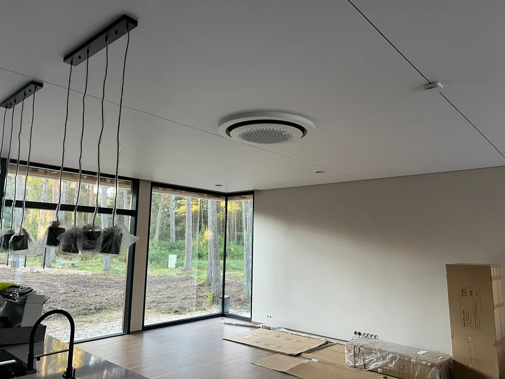

Kuulame ja planeerime
Arutame läbi ruumi, materjali ja soovitud tulemuse.
Meist / Töö põhimõtted
Hea tulemus ei alga esimese laua paigaldamisest. See algab ruumi mõistmisest ja materjali läbimõeldud valikust.

Materjalist tervikuni
Puidusüü, laua suund ja viimistlus kujundavad kodu ilmet iga päev. Sellepärast tasub põrandat vaadata koos seinte, valguse ja mööbliga.
Planeerimisel arvestame ruumi mõõte, ühenduskohti ja aluspõranda seisukorda. Tööde ulatus, materjalid ja ajakava tuleb enne alustamist üheselt kokku leppida.
Materjali käsitlemisel on oluline järgida tootja juhiseid. Hoolikas ettevalmistus ja viimistletud üleminekud aitavad luua ühtse tulemuse.
Koostöö
Arutame läbi ruumi, materjali ja soovitud tulemuse.
Hea põrand algab tasase ja sobiva aluspõranda hindamisest.
Lauasuund, muster ja ühenduskohad moodustavad terviku.
Liistud ja üleminekud annavad põrandale lõpetatud ilme.
Parketitöid teeb RK Meistrid OÜ Tallinnas ja Harjumaal. Materjalid, töömaht ning ajakava lepitakse kokku enne töö algust.
Kontrollime aluspinda, paigaldame parketi või laminaadi ning viimistleme liistud ja üleminekud. Kahjustatud põrandal hindame, kas sobib kohtparandus, lihvimine või uue katte paigaldus.
Saada fotod, pindala ja objekti asukoht: info@renoveerikodu.ee või helista +372 5853 1832.
Sinu kodu järgmine samm
Räägi oma ruumist ja soovitud põrandast.
Aitame lähteülesande selgeks teha.
Saada oma põranda mõõdud ja soovid, et saaksime koostada pakkumise.